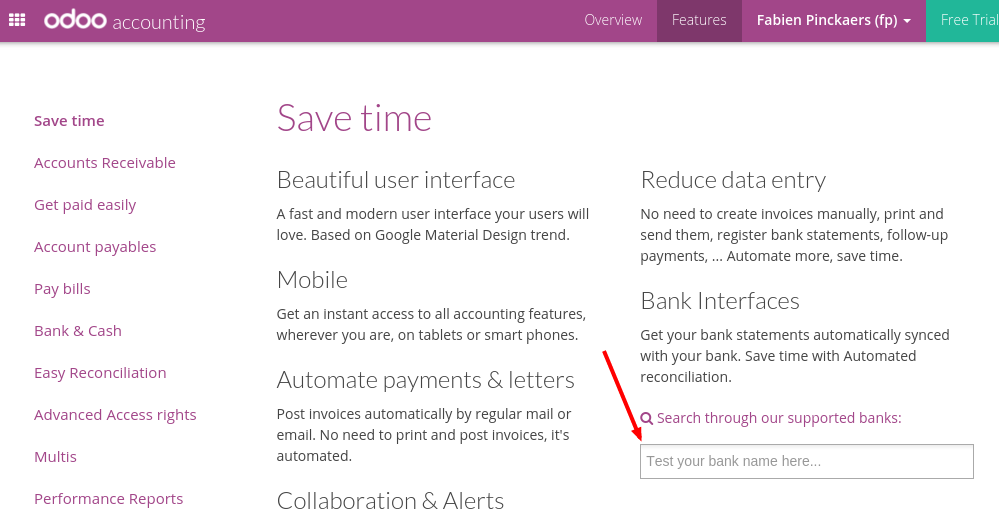

Odoo is able to synchronize directly with your bank in order to get all bank statements imported automatically in Odoo every 4 hours. Before moving forward in this tutorial, you should check if your bank is supported. You can find it out from the Odoo Accounting Features
Search for your bank name in the above page. If your bank appears in the proposition, it means it is supported by Odoo. The countries which are fully supported (meaning more than 95% of the banks) include: United States, Canada, New Zealand, Austria. More than 30 countries are partially supported, including: Colombia, India, France, Spain, etc.
In order to connect with the banks, Odoo uses two web-services:
- Plaid: for the main banks in the U.S.
- Yodlee: for all other banks
Configuration
Odoo Online Users
If you we support banks of your country, the bank integration feature should already been installed. If it's not installed, you can manually install the module account_yodlee.
Odoo Enterprise Users
If you plan to use a bank interface with your Odoo Enterprise subscription, contact Odoo Support in order to get the credentials to sync Yodlee or Plaid with your bank accounts.
Once you get your credentials, you can register them from the menu of the Accounting application.
Sync your bank feeds
Once the Plaid or Yodlee interface is installed, you can connect Odoo to your bank. To do that, click on More on the bank of your choice from the accounting dashboard. In the menu, click on Settings to configure this bank account.

In the bank form, from the Bank Account tab, set the bank feeds option to Bank Synchronization.

Once it's done, go back to your accounting dashboard. You should see a Online Synchronization button on your bank card. Click on this button and fill in your bank credentials.
Once you filled in your credentials, your bank feeds will be synchronized every 4 hours.